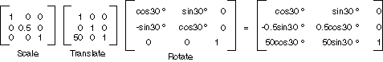
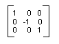
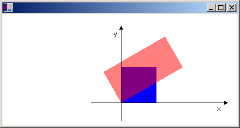

Глобальные и локальные преобразования
Глобальное преобразование — это преобразование, применяемое к каждому элементу, рисуемой элементом заданного Graphics объекта. Напротив локальное преобразование — это преобразование, применяемое к конкретному элементу для отрисовки.
Глобальные преобразования
Чтобы создать глобальное преобразование, сконструировать Graphics объекта и обработки его Transform свойство. Transform Свойство Matrix объекта, поэтому он может содержать любую последовательность аффинных преобразований. Преобразование, заданное Transform свойство называется мировое преобразование. Graphics Класс предоставляет несколько методов для построения составного мировое преобразование: MultiplyTransform, RotateTransform, ScaleTransform, и TranslateTransform. В следующем примере рисуется эллипс дважды: один раз, перед созданием мировое преобразование и один раз после. Преобразование сначала масштабируется с коэффициентом 0,5 по оси y, а затем преобразует 50 единиц по оси x и затем поворачивается на 30 градусов.
myGraphics.DrawEllipse(myPen, 0, 0, 100, 50);
myGraphics.ScaleTransform(1, 0.5f);
myGraphics.TranslateTransform(50, 0, MatrixOrder.Append);
myGraphics.RotateTransform(30, MatrixOrder.Append);
myGraphics.DrawEllipse(myPen, 0, 0, 100, 50);
На следующем рисунке изображены матрицы преобразования.

Note
В приведенном выше примере эллипс поворачивается вокруг точки отсчета в систему координат, которая находится в левом верхнем углу клиентской области. В результате получается другой результат, чем поворот эллипса относительно его собственного центра.
Локальные преобразования
Локальное преобразование применяется к конкретному элементу для отрисовки. Например GraphicsPath объект имеет Transform метод, который позволяет превращать точки данных этого пути. В следующем примере рисуется прямоугольник без преобразований и путь, содержащий преобразование поворота. (Предполагается, что имеется не мировое преобразование).
Matrix myMatrix = new Matrix();
myMatrix.Rotate(45);
myGraphicsPath.Transform(myMatrix);
myGraphics.DrawRectangle(myPen, 10, 10, 100, 50);
myGraphics.DrawPath(myPen, myGraphicsPath);
Вы можете объединить мировое преобразование локального преобразования позволяет получать различные результаты. Например можно использовать мировое преобразование координат и использовать локальные преобразования для поворота и масштабирования объектов, нарисованных на новую систему координат.
Предположим, требуется, чтобы в системе координат с его происхождения 200 пикселей от левого края клиентской области и 150 пикселей от верхнего края клиентской области. Кроме того Предположим, что в единицы измерения должна использоваться точка, ось x вправо, а ось y, указывающая вверх. Система координат по умолчанию имеет ось y направлена вниз, поэтому вам нужно выполнить отражение относительно горизонтальной оси. Ниже показана матрица такое отражение.

Затем Предположим, что необходимо выполнить сдвиг вправо 200 единиц и 150 единицы работы.
Следующий пример устанавливает систему координат, описанное заданием мировое преобразование объекта Graphics объекта.
Matrix myMatrix = new Matrix(1, 0, 0, -1, 0, 0);
myGraphics.Transform = myMatrix;
myGraphics.TranslateTransform(200, 150, MatrixOrder.Append);
Следующий код (он размещен в конце предыдущего примера) создает путь, состоящий из одного прямоугольника, его нижнего левого угла, в начале координат новой системы координат. То прямоугольник заливается один раз без локального преобразований и один раз с применением локального преобразования. Локальное преобразование заключается горизонтального масштабирования с коэффициентом 2, а затем поворот на 30 градусов.
// Create the path.
GraphicsPath myGraphicsPath = new GraphicsPath();
Rectangle myRectangle = new Rectangle(0, 0, 60, 60);
myGraphicsPath.AddRectangle(myRectangle);
// Fill the path on the new coordinate system.
// No local transformation
myGraphics.FillPath(mySolidBrush1, myGraphicsPath);
// Set the local transformation of the GraphicsPath object.
Matrix myPathMatrix = new Matrix();
myPathMatrix.Scale(2, 1);
myPathMatrix.Rotate(30, MatrixOrder.Append);
myGraphicsPath.Transform(myPathMatrix);
// Fill the transformed path on the new coordinate system.
myGraphics.FillPath(mySolidBrush2, myGraphicsPath);
Ниже показан новый системы координат и двух прямоугольников.
